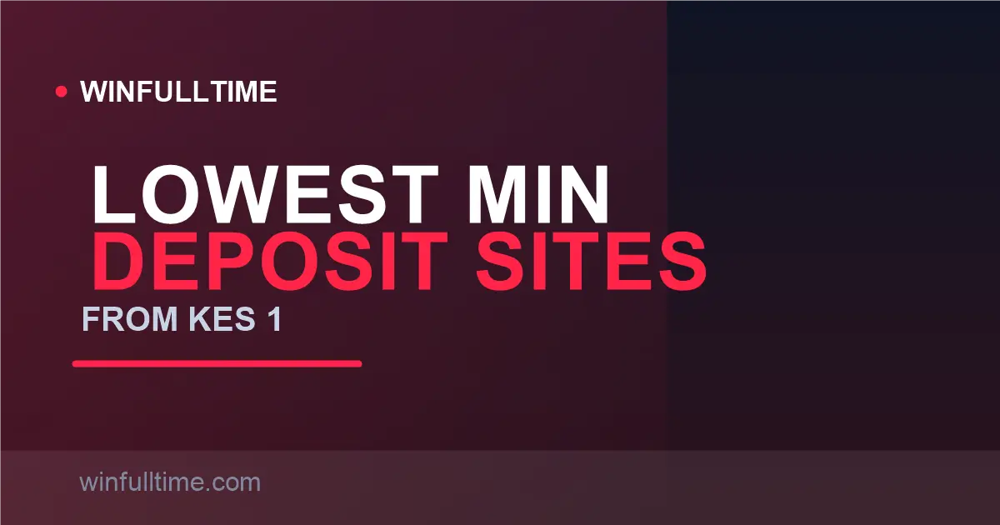

Betting Sites with the Lowest Minimum Deposit in Kenya 2026: From KES 1

You do not need KES 10,000 to start betting in Kenya. The market has quietly rebuilt itself around pocket-change entry points — OdiBets lets you stake from one shilling, and most big brands open an account with a KES 100 M-Pesa deposit. Here is the honest 2026 rundown of the lowest-minimum sites, including the trap: the minimum to withdraw is nearly always higher than the minimum to deposit.

How Deposit Minimums Actually Work
Three numbers matter on every site, and they are never the same: the minimum deposit (what M-Pesa will accept on a Paybill), the minimum stake (the smallest single bet you can place), and the minimum withdrawal (the floor to cash out). A low deposit minimum is only useful if the stake minimum is equally low — a KES 100 deposit is meaningless on a site where every bet starts at KES 100, giving you exactly one shot with nothing left over.
Kenya's small-stakes market is genuinely generous. In our checks across operators, minimum deposits sit anywhere from KES 1 up to KES 500, minimum single stakes from KES 1 to KES 50, and withdrawal floors typically from KES 100 to KES 500. The advertised entry is rarely the whole story.
Figures verified August 2026 from operator pages and regional review data; minimums shift with promotions and can change without notice.
1. OdiBets KES 1 — Lowest in Kenya
OdiBets wrote the book on ultra-low limits. The "Odi" brand — from the casual Kenyan greeting — lets you place single bets and multibets from as little as KES 1, with a matching KES 1 minimum deposit via M-Pesa Paybill 290680. A single shilling gets you real football odds, and even KES 10 funds ten separate KES 1 bets.
The package beyond the price is genuinely competitive for small stakers: a KES 30 free bet on registration with no wagering requirement, the unique OdiLeague virtual game, SMS betting on 29680 for feature phones (no internet required), and a GRAK (formerly BCLB) licence. Withdrawals are quick — M-Pesa cash-outs typically land within minutes — though the minimum withdrawal sits at KES 100.
Pros
- Lowest minimums in the entire market
- Free KES 30 bet, no wagering strings
- SMS betting for basic phones
- Quick M-Pesa withdrawals
Cons
- Fewer leagues and markets than Betika or SportPesa
- Minimum withdrawal is KES 100, above the KES 1 entry
- No live streaming
Verdict: The obvious pick for students, first-timers and anyone who wants to test the market with the absolute minimum possible outlay.
2. Betika Low Entry, Big Everything Else
Betika is Kenya's most popular bookmaker and yet it remains one of the most affordable to enter. Regional review data puts the Betika M-Pesa minimum deposit as low as KES 10, with many guides listing KES 49 as the practical working floor — around the price of a single midweek jackpot string. The minimum single stake runs from KES 10 to KES 49 depending on the market.
The value of Betika for small stakers is that low entry comes with a full product: the Grand Jackpot at KES 99, Aviator crash game, instant M-Pesa deposits on Paybill 290290, and withdrawals most commonly reported within minutes to a few hours.
Pros
- Very low entry with a full-featured product
- Everything you need in one app
- Instant M-Pesa deposits
- Big jackpot programmes
Cons
- Deposit floors differ between sources (KES 10–49)
- Best odds often require slightly larger stakes
Verdict: The best low-entry all-rounder — near-minimal deposit with the widest product range per shilling.
3. SportPesa KES 10 Stakes
SportPesa keeps its entry point genuinely small: minimum stakes of KES 10 on both singles and accumulators, with M-Pesa deposits accepted from around KES 50 on most guides (and below on others). That puts a full weekend of football — five KES 10 singles — inside a single small top-up.
The trade-off is speed rather than price. As one of the most trusted local brands, SportPesa compensates its slightly higher deposit floor with reliable payouts, strong jackpot offerings and a clean, proven app.
Pros
- KES 10 minimum stake on singles and accas
- Reliable, proven payout record
- Instant M-Pesa funding
Cons
- Deposit floor slightly above Betika/OdiBets
- Fewer ultra-low-stake variants than small operators
Verdict: For bettors who want KES 10 stakes behind a brand they can trust with real winnings.
4. Betway Kenya Fast Payouts, Low Entry
Betway Kenya marries a low M-Pesa entry point with the market's fastest payouts. Regional guides put the Betway Kenya M-Pesa minimum between KES 10 and KES 50 depending on source, and the brand is famous for consistent withdrawals landing in two to 24 hours — many within six. For small-stakes players, that speed matters: it means your KES 200 win is actually reachable.
You also get the deepest football coverage in the market, a Betway Boost daily enhanced odds, and native iOS and Android apps. The trade-off is slightly higher entry assumptions than the pure budget sites.
Pros
- Low M-Pesa entry point
- Fastest, most consistent withdrawals tested
- Market-leading football depth
Cons
- Some sources list a KES 100 M-Pesa floor
- Welcome bonus favours accumulator players
Verdict: The best low-entry option for anyone who plans to win small amounts and actually cash them out quickly.
5. MozzartBet KES 20 up
MozzartBet delivers a comfortable middle ground: a stated KES 20 minimum deposit on most guides with BCLB licensing and a strong day-one local presence. With 13-game jackpot coupons at KES 50 and instant M-Pesa deposits, it comfortably serves the small-dollar market while keeping prize programmes competitive.
Its jackpot is genuinely slow to reach the pockets of big winners but highly accessible on entry — and for low-bankroll players, that combination of licence, cheap entry and jackpot opportunity makes it a solid second account.
Pros
- Very affordable KES 20–100 entry
- Trusted, licensed local operator
- Easier 13-game jackpot format
Cons
- Stake minimums higher than the pure budget brands
- Smaller football market depth
Verdict: A dependable budget entry with a licence to match — ideal as a second account behind Betika or Betway.
Minimum Deposit Comparison Table
| Operator | Min Deposit | Min Stake | Min Withdrawal | Licence |
|---|---|---|---|---|
| OdiBets | KES 1 | KES 1 | KES 100 | GRAK (BCLB) |
| Betika | KES 10–49 | KES 10–49 | KES 100–500 | GRAK (BCLB) |
| SportPesa | ~KES 50 | KES 10 | KES 100–500 | GRAK (BCLB) |
| Betway Kenya | KES 10–100 | Low | KES 100–500 | GRAK (BCLB) |
| MozzartBet | ~KES 20–100 | ~KES 20–50 | KES 100–500 | GRAK (BCLB) |
| SportyBet | KES 100 | ~KES 10–50 | KES 100+ | GRAK (BCLB) |
| 22Bet | KES 100 | ~KES 10–50 | KES 100+ | Curacao |
| 1xBet | ~KES 30–50 | ~KES 30 | KES 100+ | Curacao |
| bet365 | KES 500 | ~KES 10 | ~KES 100 | Offshore |
Range reflects conflicting regional review data where sources disagree. Always confirm the exact floor on the operator's cashier before depositing.
Tip: minimums are negotiable by method
The deposit floor usually varies by payment method. M-Pesa and Airtel Money typically carry the lowest minimums (from KES 10 to KES 100), while cards, bank transfers and vouchers start higher. Deposit via mobile money for the smallest possible entry and instant credit.
The Withdrawal Reality Check
Here is the part most budget guides skip: the money goes out slower than it comes in. Withdrawal floors across Kenyan operators run from KES 100 to KES 500, comfortably above the KES 1 to KES 100 deposit minimums. On OdiBets you can deposit KES 1 but you need KES 100 to withdraw; on Betika the gap is similar.
The practical implication for small stakers: build a bankroll before cashing out. A single KES 10 win cannot be withdrawn anywhere — you naturally compound into the cashable range. Treat the withdrawal floor not as a hurdle but as an argument for bankroll-building rather than hit-and-run withdrawals.
Small-Bankroll Tips for Kenyan Bettors
Tip 1: Match the deposit floor to the stake floor
A KES 100 minimum deposit means nothing on a site with a KES 100 minimum stake — one bet, then you are empty. Pick sites where the stake minimum is a fraction of the deposit floor (OdiBets, SportPesa, Betika), so a single top-up funds several bets.
Tip 2: Remember the built-in excise
Every stake carries the 20% excise duty inside the price — a KES 10 bet actually places KES 8 at risk and KES 2 to tax. Nobody charges it as a separate line item, but it shapes your true odds, so expect to win slightly less than clean maths suggests.
Tip 3: Use the free money
OdiBets gives new accounts a KES 30 free bet with no wagering requirement — quietly the best free offer in the Kenyan market for small stakers. Combine it with betPawa's free jackpot coupons and you can bet for weeks without depositing real money.
Tip 4: Know your cash-out floor before you start
Before depositing, open the cashier and read the minimum withdrawal. If it is KES 200 on a KES 10 entry site, plan a small bankroll and compound your wins into cashable territory instead of pulling out after every micro-win.
Frequently Asked Questions
Which betting site has the lowest minimum deposit in Kenya?
OdiBets lets you bet and deposit from as little as KES 1 via M-Pesa Paybill 290680 — the lowest entry in Kenya. For mainstream brands, Betika, SportPesa and Betway all accept M-Pesa deposits from around KES 10 to KES 50.
Can I bet with just KES 100 in Kenya?
Yes. KES 100 is the practical floor accepted by most Kenyan operators, and sites like SportyBet and 22Bet set their minimum at exactly KES 100. That amount usually covers several singles priced from KES 10, plus multibets using your full balance.
Do small deposits attract fees in Kenya?
Almost all licensed operators cover the M-Pesa deposit fee on small top-ups, so a KES 100 deposit lands in your wallet at KES 100. The charge you do pay is the 20% excise duty built into every stake, not a separate deposit fee.
Why is the minimum withdrawal higher than the minimum deposit?
Withdrawal floors sit higher than deposit minimums because operators offset mobile-money transaction costs on the way out. Typical minimum withdrawals run from KES 100 up to KES 500, so budget to turn your entry bankroll into a cashable amount before requesting a payout.
Are low-minimum betting sites safe in Kenya?
Yes, provided the operator holds a valid BCLB (now GRAK) licence. OdiBets, Betika, SportPesa and Betway are all licensed locally. A low minimum deposit is a marketing choice, not a safety signal — check the licence and payment terms before you sign up.
Make Every Small Stake Count
Build your edge with data-driven picks, head-to-head analysis and value-oriented predictions built for Kenyan and European football.
Last updated: 30 August 2026 | By Tochukwu Mesigo |
Build Winning Accumulator Tickets
Generate optimized accumulator combinations from today's data-driven predictions. Set your target odds and get instant ticket suggestions.
Pro Ticket Builder →